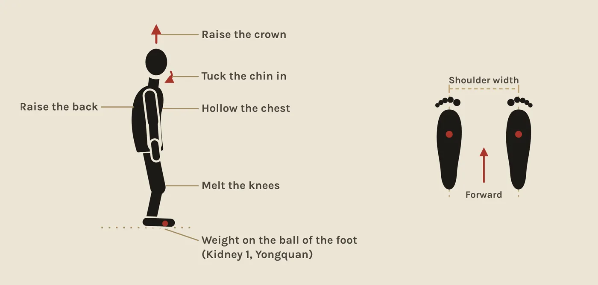
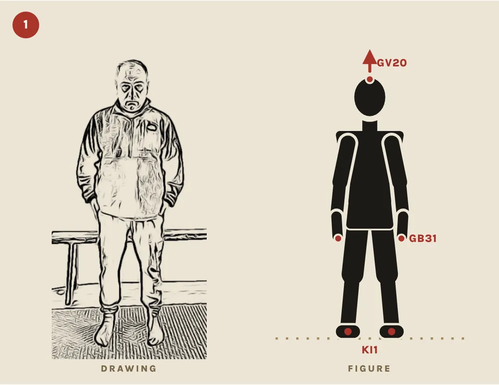
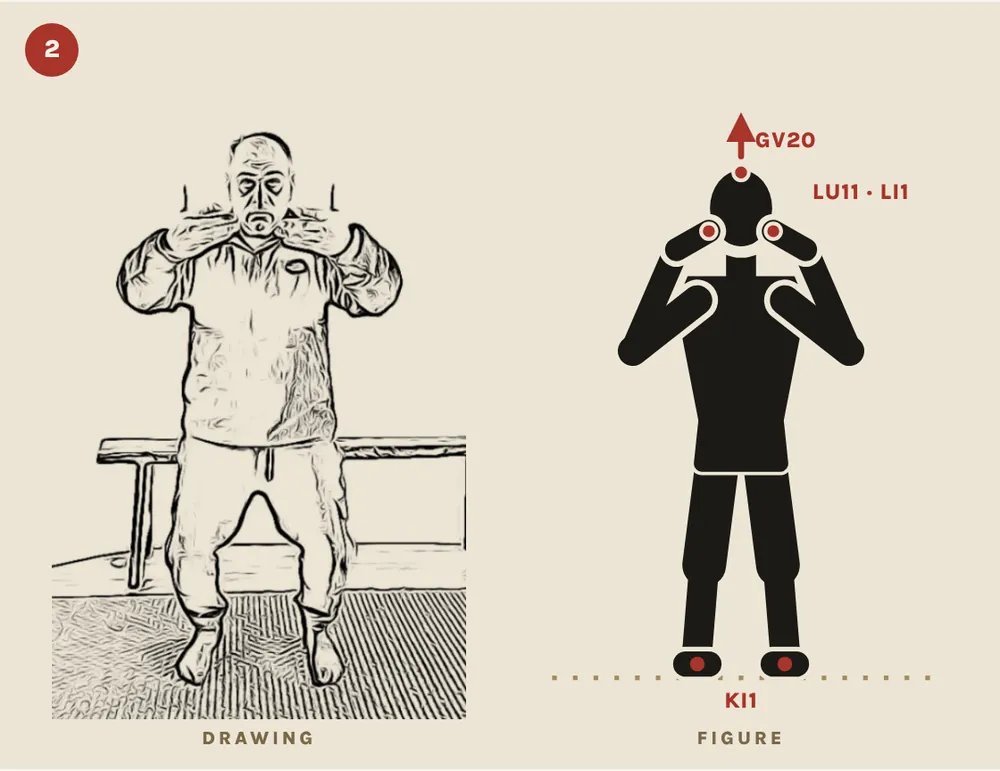
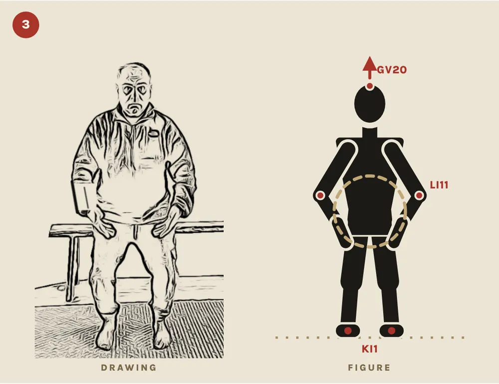
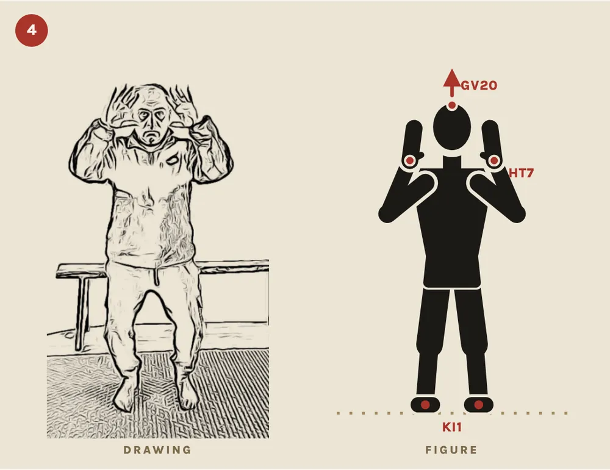
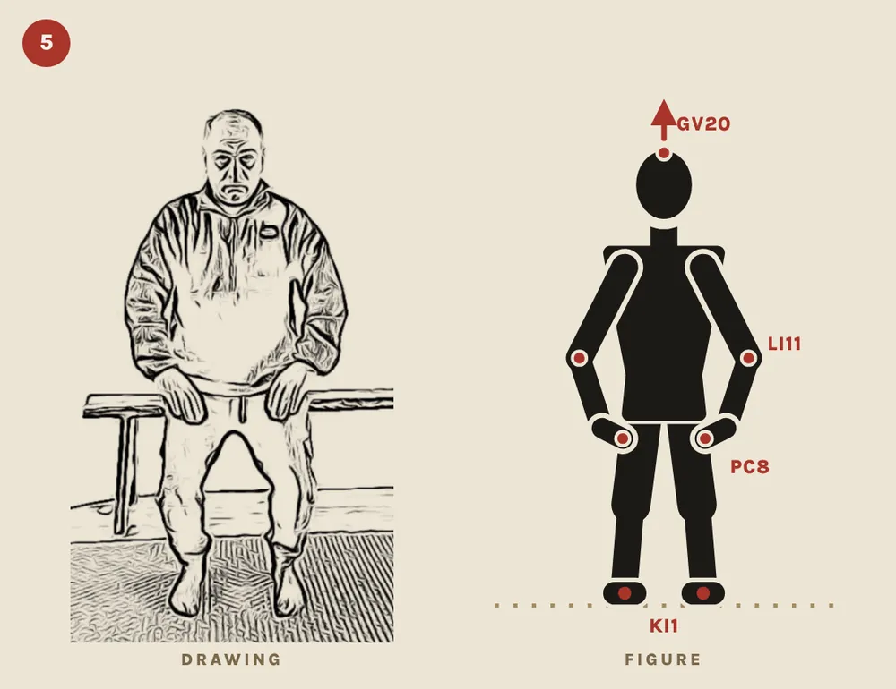
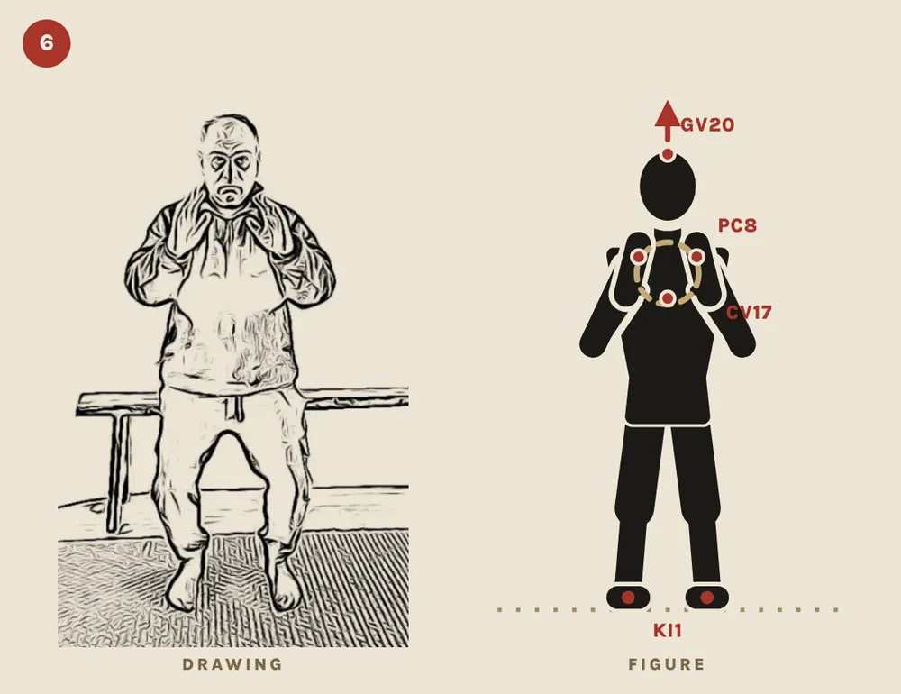
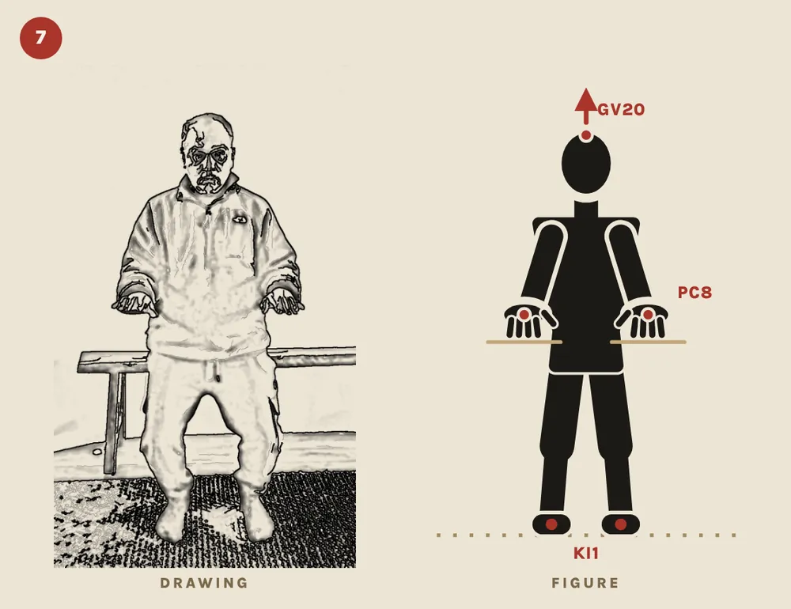
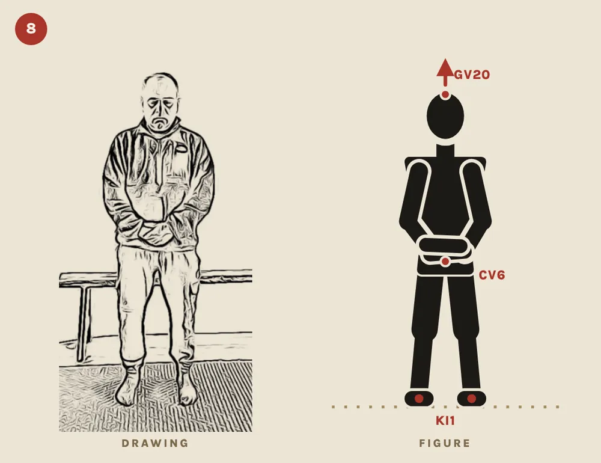

Chi Kung (气功, also written Qigong) means “energy work”. It is the quiet side of Tai Chi Chuan: posture, breathing and attention, practised standing still. In EmptyHands Tai Chi classes, students work through a short set of eight standing postures that settle the breath, align the body and prepare it for the form. The postures are taught in line with the teachings of the Master Ding Academy, where Azeem Sensei has studied traditional Yang family Tai Chi Chuan since 1999 with Master John Ding and Sifu Doosyant Mahadeo.
The postures look simple, and they are. The skill lies in holding them with a relaxed body and a quiet mind, and that is where both the health benefits and the martial value come from. This guide takes you through each posture, what to feel, and the pressure points to be aware of.
Before you start

Every posture shares the same foundations:
- Feet parallel and pointing straight forward, not turned out, and exactly shoulder-width apart.
- Weight on the balls of the feet, rooting through Yongquan (KI1), the Bubbling Spring.
- Head lifted from the crown through Baihui (GV20), with the chin gently tucked in.
- Chest hollowed and the back raised, so the upper body is rounded rather than puffed out.
- Shoulders relaxed, with the elbows down.
- Knees “melted”, slightly bent, in postures 2 to 7, and straight in postures 1 and 8.
The whole set can be summed up in one line: Baihui lifts, Shen Men opens, Lao Gong relaxes, Yong Quan roots. The crown lifts, the wrists soften, the palms relax and the feet root into the ground. Do not focus hard on the points. Let them open naturally through good posture and relaxation.
The eight postures
1. Wu Chi: stillness

Stand upright with the legs straight and let the arms hang by your sides, middle fingers resting on the seams of your trousers. Here they touch Fengshi (GB31) on the outer thigh, while the palms (Lao Gong, PC8) and wrists (Shen Men, HT7) stay soft.
Wu Chi (无极) means “without extremes”: the empty, balanced state before movement begins. Every Tai Chi form starts and finishes here, and alignment you can find in stillness is far easier to keep in motion.
2. Hands to the Mouth: the breath

Melt the knees and raise the hands to mouth level, keeping the shoulders relaxed and the elbows down. Be aware of the thumbs, where the Lung channel ends (Shaoshang, LU11), and the index fingers, where its partner, the Large Intestine channel, begins (Shangyang, LI1).
This posture links the stance with the breath. Raising the hands without lifting the shoulders is also one of the first lessons of Tai Chi: the arms are carried by the body, not hoisted by the shoulders.
3. Holding the Large Ball: sinking the elbows

Drop the arms down as if holding a large beach ball, fingertips dropping downwards. The elbows point outwards but stay relaxed, and the arms are held away from the body. As the elbows sink, the points around them open, especially Quchi (LI11) at the outer end of the elbow crease.
The rounded, springy arms are an early taste of peng (掤), the buoyant, expanding energy Tai Chi uses to absorb and redirect force. Dropping the elbows keeps the arms connected to the body and protects the ribs.
4. Palms Turn Outwards: opening the heart

Bring the arms up with the palms facing outwards, shoulders relaxed and elbows down. Let the little fingers lengthen. The Heart channel runs through the inner elbow and the wrist (Shen Men, HT7, the “Spirit Gate”) to the little finger (Shaochong, HT9).
The Heart channel is linked with a calm mind, and many people feel this posture open the chest and release tension across the shoulders.
5. Palms Press Down: the palm heart

Bring the arms down with the palms facing the ground and the elbows out. Keep the arms away from the body and everything relaxed, including the waist. The elbows sink again, and attention moves to the centre of the palms, Lao Gong (PC8), the “Palace of Labour”.
Lao Gong is often the first place students feel warmth or tingling. A useful reminder for this posture is: open the Lao Gong, soften the Shen Men, sink the elbows, lift Baihui. Martially, it trains sinking: the feeling of weight dropping through the palms, legs and feet into the ground.
6. Holding the Small Ball: listening energy

Bring the arms in front of the chest as if holding a smaller ball, palms pushing slightly outwards. Feel the ball through the palms (Lao Gong, PC8), with the heart centre, Danzhong (CV17), behind it.
This posture is about ting jin (聽勁), listening energy. Ting means to listen, not with the ears but by feeling, and jin is trained, refined power. In push hands, ting jin is the ability to sense a partner’s force, balance and intention through contact, before they become obvious.
7. Resting on the Armchair: arousing the energy

Bring the hands down to hip level, as if resting your forearms straight on the arms of an armchair. The upper arms and elbows relax by the sides, and the forearms and hands are flat, with the fingers pointing forward.
Here the intention extends forward from the palms through the fingertips. In Tai Chi this is described as the mind (yi) leading the energy (qi): “the fingers reach, but do not stretch”. Intent without tension is the same quality that lets a Tai Chi technique be both relaxed and fast.
8. Hands on the Dantian: settling the energy

Stand up slowly and bring the hands together over the lower abdomen, just below the navel. Men place the left hand against the body and cover it with the right; women place the right hand against the body and cover it with the left. This follows the traditional yin-yang correspondence. Half close the eyes and breathe gently.
The palms now rest over the lower dantian, the body’s centre, around Qihai (CV6, the “Sea of Qi”) and Guanyuan (CV4). “Where the mind goes, qi follows”: attention settles, the breath deepens and energy sinks back down. Never skip this closing posture.
Why stand still?
For health and wellbeing, standing practice gently strengthens the legs, improves posture and trains balance, while slow, relaxed breathing calms the nervous system. Research on Tai Chi and Qigong has linked regular practice with better balance and fewer falls in older adults, lower stress, better sleep and improved mood. Many people simply find that ten quiet minutes standing leaves them calmer and more focused for the rest of the day.
For the martial artist, this kind of standing, known as zhan zhuang (站桩, “standing like a post”), has long been treated as the foundation of the internal arts. It builds root through the legs, a structure that stays aligned under pressure, and the relaxation that lets power travel from the feet to the hands. The same principles sit underneath a strong Karate stance.
How to practise
- Begin with a minute or two in each posture and build up over the weeks. The whole set takes 10 to 20 minutes.
- Breathe naturally through the nose, without forcing or holding the breath.
- Move slowly and smoothly from one posture to the next.
- Practise daily if you can. First thing in the morning works well.
- Keep the knees soft and over the toes, never locked or pushed past them.
- Stop if you feel pain or dizziness, and check with your GP first if you have a health condition or injury.
Pressure points at a glance
| Point | Name | Where | Postures |
|---|---|---|---|
| GV20 | Baihui 百会, Hundred Meetings | Crown of the head | All |
| KI1 | Yongquan 涌泉, Bubbling Spring | Sole of the foot, just behind the ball | All |
| GB31 | Fengshi 风市, Wind Market | Outer thigh, where the middle finger rests | 1 |
| HT7 | Shen Men 神门, Spirit Gate | Wrist crease, little-finger side | 1, 4 |
| PC8 | Lao Gong 劳宫, Palace of Labour | Centre of the palm | 1, 5, 6, 7, 8 |
| LU11 | Shaoshang 少商 | Outer corner of the thumbnail | 2 |
| LI1 | Shangyang 商阳 | Thumb-side corner of the index fingernail | 2 |
| LI11 | Quchi 曲池, Pool at the Bend | Outer end of the elbow crease | 3, 5 |
| HT9 | Shaochong 少冲 | Ring-finger side of the little fingernail | 4 |
| CV17 | Danzhong 膻中, Chest Centre | Centre of the chest, between the nipples | 6 |
| CV6 | Qihai 气海, Sea of Qi | Two fingers’ width below the navel | 8 |
| CV4 | Guanyuan 关元 | Four fingers’ width below the navel | 8 |
Learn it in class
Chi Kung is best learned with a teacher who can check your alignment. Tai Chi Chuan classes run every Thursday from 6pm to 7pm at St Andrew’s Church Hall, The Drive, Ilford, and beginners of all ages are welcome. Read more about Tai Chi at EmptyHands and the health benefits of Tai Chi, or book your first class.